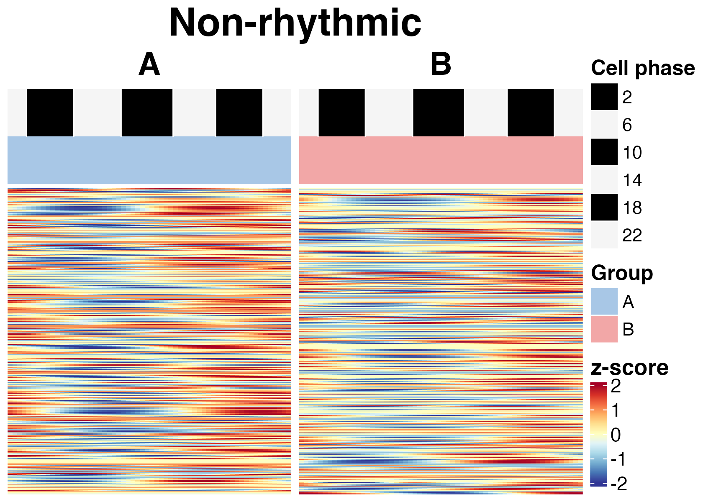
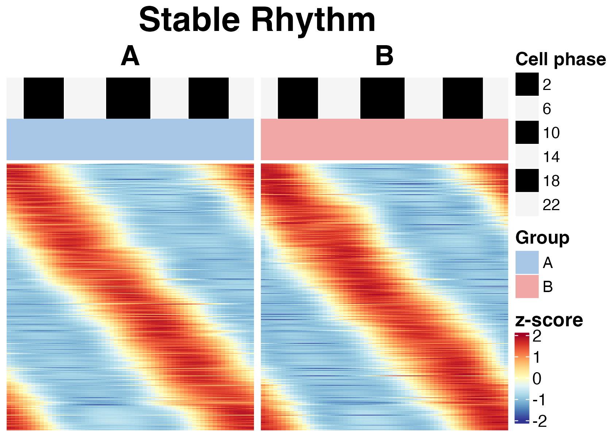
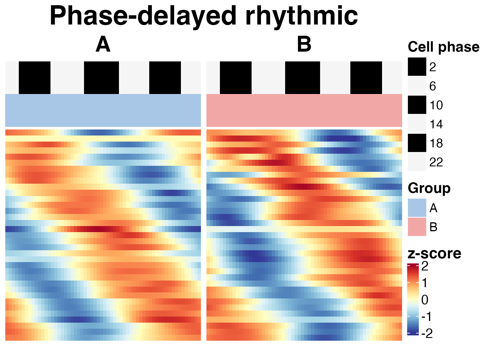
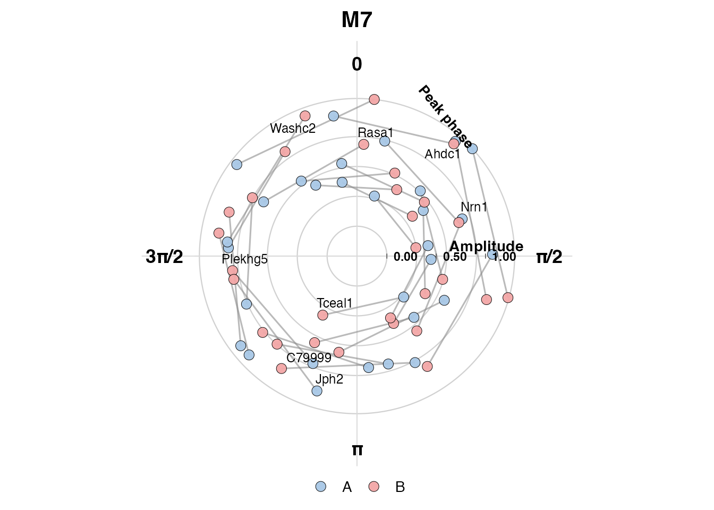

module-analysis.RmdThis tutorial describes the rhythm-state module branch of
scRhythmBayes.
The module branch is the main workflow for a two-group
rhythm-state comparison within a defined biological context. A
typical use case is condition A versus condition
B within one selected cell type.
The workflow has five steps:
This tutorial focuses on the condition comparison within cell type
1. For direct cell-type comparisons or one-vs-rest
discovery, see the basic workflow and OVR tutorials.
library(scRhythmBayes)
data("srb_example_data")
count <- srb_example_data$Count
metadata <- srb_example_data$meta
dim(count)
#> NULL
head(metadata)
#> cell ZT celltype condition T_true Theta_true
#> Cell00001 Cell00001 0 1 A 23.3400755 6.1104175
#> Cell00002 Cell00002 0 1 B 23.7670342 6.2221950
#> Cell00003 Cell00003 0 1 B 0.9221928 0.2414295
#> Cell00004 Cell00004 0 1 B 1.9315598 0.5056812
#> Cell00005 Cell00005 0 1 A 0.9730132 0.2547343
#> Cell00006 Cell00006 0 1 A 1.1848616 0.3101960
table(metadata$celltype, metadata$condition)
#>
#> A B
#> 1 502 498
#> 2 501 499
#> 3 501 499
#> 4 502 498The required inputs are:
| Object | Description |
|---|---|
count |
Gene-by-cell count matrix |
metadata |
Cell-level metadata containing sampling time, cell type, and condition |
ZT |
Sampling Zeitgeber time column used for phase inference |
celltype |
Cell-type label used as the phase-inference stratum |
condition |
Two-group comparison variable for module analysis |
The module workflow starts from inferred cell phases. These phases are used as latent temporal coordinates for fitting gene-level rhythmic parameters.
res_phase <- infer_cell_phase(
count = count,
metadata = metadata,
ZT_by = "ZT",
strata_by = "celltype",
Species = "mouse",
setseed = 1,
Verbose = FALSE
)
head(res_phase)
#> # A tibble: 6 × 7
#> cell ZT_input stratum theta_pred ZT_pred Rbar r_cell
#> <chr> <dbl> <chr> <dbl> <dbl> <dbl> <dbl>
#> 1 Cell00001 0 1 0.0444 0.169 0.999 0.999
#> 2 Cell00002 0 1 6.21 23.7 0.979 0.998
#> 3 Cell00003 0 1 0.570 2.18 0.994 0.998
#> 4 Cell00004 0 1 0.829 3.17 0.991 0.990
#> 5 Cell00005 0 1 6.26 23.9 0.995 0.999
#> 6 Cell00006 0 1 0.553 2.11 0.998 0.999The output res_phase contains one row per cell.
| Column | Description |
|---|---|
cell |
Cell identifier |
ZT_input |
Observed sampling Zeitgeber time |
stratum |
Stratum used during phase inference |
theta_pred |
Inferred cell-level circadian phase in radians |
ZT_pred |
Inferred phase converted to 24-hour time |
Rbar |
Aggregate phase concentration statistic |
r_cell |
Cell-level phase reliability weight |
The two key columns for downstream modeling are
theta_pred and r_cell.
The recommended module-analysis design is to compare two groups
within a defined biological context. Here, we select cell type
1 and compare condition A versus condition
B.
cell_use <- as.character(metadata$celltype) == "1"
count_use <- count[, cell_use, drop = FALSE]
metadata_use <- metadata[cell_use, , drop = FALSE]
res_phase_use <- res_phase[cell_use, , drop = FALSE]
dim(count_use)
#> [1] 1000 1000
table(metadata_use$condition)
#>
#> A B
#> 502 498This subset contains only cells from cell type 1. The
downstream model estimates rhythmic parameters separately for condition
A and condition B.
The gene-level model requires the selected count matrix, selected metadata, inferred cell phase, cell-level reliability weight, and a grouping variable.
| Argument | Description |
|---|---|
count |
Gene-by-cell count matrix for the selected cell subset |
metadata |
Metadata for the same cells |
theta_pred |
Inferred cell phase from res_phase
|
r_cell |
Cell-level phase reliability weight |
strata_by |
Grouping variable for gene-level parameter estimation, here
condition
|
res_param <- infer_gene_param(
count = count_use,
metadata = metadata_use,
theta_pred = res_phase_use$theta_pred,
r_cell = res_phase_use$r_cell,
strata_by = "condition",
B = 10,
n_worker = 1,
setseed = 1,
Verbose = FALSE
)
head(res_param$param_long)
#> gene condition Mesor Amplitude Phase Alpha Dropout_rate
#> 1 Cdkn1a A 0.1404234 2.593429 3.722156 0.04078534 0.3921122
#> 2 Mmp14 A -0.6660063 3.033545 3.980783 0.07032533 0.3864027
#> 3 Clock A -0.3343847 3.672254 6.043016 0.04036002 0.3017495
#> 4 Per2 A -0.2924385 2.721313 3.403052 0.13861201 0.2735820
#> 5 Per1 A -0.2163712 2.505427 4.723803 0.06428080 0.4899192
#> 6 Bmal1 A -2.0089392 2.537090 1.337988 0.45875078 0.5564263
#> LRT_stat P_value FDR Mean beta1_est beta2_est
#> 1 367.60918 1.495133e-80 9.798103e-79 1.1507610 -2.16850595 -1.4224819
#> 2 291.49681 5.038155e-64 9.171308e-63 0.5137563 -2.02660722 -2.2572680
#> 3 668.47368 6.962826e-146 6.844458e-143 0.7157784 3.56685264 -0.8735071
#> 4 311.72098 2.044795e-68 5.742953e-67 0.7464411 -2.62882651 -0.7034332
#> 5 246.15376 3.535010e-54 3.102603e-53 0.8054363 0.02859649 -2.5052640
#> 6 74.21921 7.647204e-17 1.429126e-16 0.1341309 0.58533410 2.4686450
#> log_alpha_est logit_pi_est conv_code
#> 1 -3.1994326 -0.43844212 0
#> 2 -2.6546233 -0.46245875 0
#> 3 -3.2099156 -0.83898054 0
#> 4 -1.9760766 -0.97652426 0
#> 5 -2.7444942 -0.04032876 0
#> 6 -0.7792482 0.22667095 0
head(res_param$param_wide)
#> # A tibble: 6 × 19
#> gene Mesor_A Mesor_B Mean_A Mean_B Amplitude_A Amplitude_B Phase_A Phase_B
#> <chr> <dbl> <dbl> <dbl> <dbl> <dbl> <dbl> <dbl> <dbl>
#> 1 Cdkn1a 0.140 0.0471 1.15 1.05 2.59 2.76 3.72 3.77
#> 2 Mmp14 -0.666 -0.381 0.514 0.683 3.03 2.80 3.98 4.06
#> 3 Clock -0.334 -0.256 0.716 0.774 3.67 3.50 6.04 5.99
#> 4 Per2 -0.292 0.0764 0.746 1.08 2.72 2.28 3.40 3.40
#> 5 Per1 -0.216 -0.194 0.805 0.823 2.51 2.46 4.72 4.76
#> 6 Bmal1 -2.01 -2.54 0.134 0.0792 2.54 3.01 1.34 1.31
#> # ℹ 10 more variables: Alpha_A <dbl>, Alpha_B <dbl>, Dropout_rate_A <dbl>,
#> # Dropout_rate_B <dbl>, FDR_A <dbl>, FDR_B <dbl>, Delta_Mesor <dbl>,
#> # Delta_Mean <dbl>, Delta_Amp <dbl>, Delta_Phase <dbl>The long-format table stores rhythmic parameters for each group. The wide-format table is used for paired module comparison.
| Output | Description |
|---|---|
param_long |
Long-format gene-level rhythmic parameter estimates for each group |
param_wide |
Wide-format paired parameter table for downstream module analysis |
bootstrap_res |
Bootstrap results if available |
Common columns include:
| Column | Meaning |
|---|---|
gene |
Gene name |
Mesor |
Baseline rhythmic expression level |
Mean |
Mean expression level |
Amplitude |
Circadian oscillation amplitude |
Phase |
Rhythmic phase in radians |
Alpha |
Dispersion-related parameter |
Dropout_rate |
Estimated dropout rate |
LRT_stat |
Likelihood-ratio test statistic |
P_value |
Nominal rhythmicity test P value |
FDR |
Adjusted rhythmicity significance |
The module model compares rhythmic parameters between two groups and assigns genes to interpretable rhythm-state remodeling classes.
res_module <- infer_rhythm_module(
param_wide = res_param$param_wide,
compare_by = "condition",
group1 = "A",
group2 = "B",
out_dir = NULL,
Verbose = FALSE
)
head(res_module$module_result)
#> # A tibble: 6 × 27
#> gene compare_by group1 group2 FDR_A FDR_B Amplitude_A Amplitude_B
#> <chr> <chr> <chr> <chr> <dbl> <dbl> <dbl> <dbl>
#> 1 Cdkn1a condition A B 9.80e- 79 1.51e- 59 2.59 2.76
#> 2 Mmp14 condition A B 9.17e- 63 4.54e- 55 3.03 2.80
#> 3 Clock condition A B 6.84e-143 3.48e-119 3.67 3.50
#> 4 Per2 condition A B 5.74e- 67 8.81e- 58 2.72 2.28
#> 5 Per1 condition A B 3.10e- 53 1.02e- 44 2.51 2.46
#> 6 Bmal1 condition A B 1.43e- 16 3.39e- 21 2.54 3.01
#> # ℹ 19 more variables: Phase_A <dbl>, Phase_B <dbl>, delta_phi_rad <dbl>,
#> # rA <dbl>, u <dbl>, v <dbl>, seed_module <int>, module_map <int>,
#> # module_name <chr>, post_M0 <dbl>, post_M1 <dbl>, post_M2 <dbl>,
#> # post_M3 <dbl>, post_M4 <dbl>, post_M5 <dbl>, post_M6 <dbl>, post_M7 <dbl>,
#> # post_max <dbl>, margin <dbl>
table(res_module$module_result$module_name, useNA = "ifany")
#>
#> Amplitude-attenuated rhythmic Amplitude-enhanced rhythmic
#> 34 14
#> Non-rhythmic Phase-advanced rhythmic
#> 358 45
#> Phase-delayed rhythmic Rhythm Gain
#> 35 61
#> Rhythm Loss Stable Rhythm
#> 57 394The module result summarizes whether genes remain rhythmic, gain rhythmicity, lose rhythmicity, shift phase, change amplitude, or show other rhythm-state remodeling patterns.
Important output columns include:
| Column | Description |
|---|---|
gene |
Gene name |
compare_by |
Comparison variable |
group1, group2
|
Compared groups |
FDR_A, FDR_B
|
Rhythmicity FDR in each group |
Amplitude_A, Amplitude_B
|
Rhythmic amplitude in each group |
Phase_A, Phase_B
|
Rhythmic phase in each group |
delta_phi_rad |
Phase shift between groups in radians |
module_name |
Assigned rhythm-state remodeling module |
post_max |
Maximum posterior module probability |
margin |
Difference between top posterior probabilities |
The module heatmap summarizes phase-ordered expression patterns for genes assigned to rhythm-state modules.
hm_module <- plot_module_heatmap(
count = count_use,
res_phase = res_phase_use,
gene_meta = res_module$module_result,
metadata = metadata_use,
group_by = "condition",
group1 = "A",
group2 = "B"
)
hm_module
#> scRhythmModuleHeatmap object
#> module module_name n_gene_input n_gene_final
#> module0 0 Non-rhythmic 358 347
#> module1 1 Stable Rhythm 394 394
#> module2 2 Rhythm Gain 61 61
#> module3 3 Rhythm Loss 57 57
#> module4 4 Amplitude-enhanced rhythmic 14 14
#> module5 5 Amplitude-attenuated rhythmic 34 34
#> module6 6 Phase-advanced rhythmic 45 45
#> module7 7 Phase-delayed rhythmic 35 35
#> ref_group status
#> module0 A ok
#> module1 A ok
#> module2 B ok
#> module3 A ok
#> module4 A ok
#> module5 A ok
#> module6 A ok
#> module7 A okThe following plots display selected module IDs. This keeps the tutorial compact while still showing the heatmap output format.
plot(hm_module, module_id = 0)
plot(hm_module, module_id = 1)
plot(hm_module, module_id = 7)
The heatmap shows expression patterns ordered by inferred cell phase and separated by condition. It is useful for checking whether genes assigned to a module show coherent phase-resolved expression patterns across the compared groups.
If a complete visual inspection is needed, all eight module IDs can be plotted.
plot(hm_module, module_id = 0)
plot(hm_module, module_id = 1)
plot(hm_module, module_id = 2)
plot(hm_module, module_id = 3)
plot(hm_module, module_id = 4)
plot(hm_module, module_id = 5)
plot(hm_module, module_id = 6)
plot(hm_module, module_id = 7)Keeping the full set as eval = FALSE can reduce vignette
build time and avoid generating an overly long article page. If the goal
is a fully visual GitHub Pages tutorial, these lines can be split into
separate evaluated chunks.
The polar plot displays rhythmic remodeling in amplitude-phase space. Phase is represented by angular position and amplitude by radial distance.
p_polar <- plot_module_polar(
gene_meta = res_module$module_result,
module_id = 7,
group1 = "A",
group2 = "B"
)
p_polar$plot
This plot is useful for inspecting how genes in a selected module are distributed by rhythmic amplitude and phase.
data("srb_example_data")
count <- srb_example_data$Count
metadata <- srb_example_data$meta
res_phase <- infer_cell_phase(
count = count,
metadata = metadata,
ZT_by = "ZT",
strata_by = "celltype",
Species = "mouse",
setseed = 1,
Verbose = FALSE
)
cell_use <- as.character(metadata$celltype) == "1"
count_use <- count[, cell_use, drop = FALSE]
metadata_use <- metadata[cell_use, , drop = FALSE]
res_phase_use <- res_phase[cell_use, , drop = FALSE]
res_param <- infer_gene_param(
count = count_use,
metadata = metadata_use,
theta_pred = res_phase_use$theta_pred,
r_cell = res_phase_use$r_cell,
strata_by = "condition",
B = 10,
n_worker = 1,
setseed = 1,
Verbose = FALSE
)
res_module <- infer_rhythm_module(
param_wide = res_param$param_wide,
compare_by = "condition",
group1 = "A",
group2 = "B",
out_dir = NULL,
Verbose = FALSE
)
hm_module <- plot_module_heatmap(
count = count_use,
res_phase = res_phase_use,
gene_meta = res_module$module_result,
metadata = metadata_use,
group_by = "condition",
group1 = "A",
group2 = "B"
)
plot(hm_module, module_id = 0)For real datasets, the module branch should be used when the comparison is clearly defined as two groups within a biological context.
Typical designs include:
| Biological question | Suggested setup |
|---|---|
| Disease versus control within one cell type | Subset one cell type and set
strata_by = "condition"
|
| Treatment versus baseline within one cell type | Subset one cell type and set
strata_by = "condition"
|
| Region A versus region B within one cell type | Subset one cell type and set strata_by to the region
column |
| Two selected cell types | Estimate parameters by celltype, then compare two
selected labels |
For broad cell-type-specific discovery across many cell types, the OVR workflow is usually more appropriate than repeatedly running pairwise module comparisons.
sessionInfo()
#> R version 4.5.1 (2025-06-13)
#> Platform: aarch64-apple-darwin20
#> Running under: macOS Sequoia 15.5
#>
#> Matrix products: default
#> BLAS: /Library/Frameworks/R.framework/Versions/4.5-arm64/Resources/lib/libRblas.0.dylib
#> LAPACK: /Library/Frameworks/R.framework/Versions/4.5-arm64/Resources/lib/libRlapack.dylib; LAPACK version 3.12.1
#>
#> locale:
#> [1] en_US.UTF-8/en_US.UTF-8/en_US.UTF-8/C/en_US.UTF-8/en_US.UTF-8
#>
#> time zone: Asia/Shanghai
#> tzcode source: internal
#>
#> attached base packages:
#> [1] stats graphics grDevices utils datasets methods base
#>
#> other attached packages:
#> [1] tidyr_1.3.2 tibble_3.3.1 dplyr_1.2.1
#> [4] Matrix_1.7-5 purrr_1.2.2 future_1.70.0
#> [7] scRhythmBayes_0.1.0
#>
#> loaded via a namespace (and not attached):
#> [1] RColorBrewer_1.1-3 shape_1.4.6.1 rstudioapi_0.18.0
#> [4] jsonlite_2.0.0 magrittr_2.0.5 spatstat.utils_3.2-2
#> [7] farver_2.1.2 rmarkdown_2.31 GlobalOptions_0.1.4
#> [10] fs_2.1.0 ragg_1.5.2 vctrs_0.7.3
#> [13] ROCR_1.0-12 spatstat.explore_3.8-0 htmltools_0.5.9
#> [16] sass_0.4.10 sctransform_0.4.3 parallelly_1.47.0
#> [19] KernSmooth_2.23-26 bslib_0.10.0 htmlwidgets_1.6.4
#> [22] desc_1.4.3 ica_1.0-3 plyr_1.8.9
#> [25] plotly_4.12.0 zoo_1.8-15 cachem_1.1.0
#> [28] igraph_2.3.1 mime_0.13 lifecycle_1.0.5
#> [31] iterators_1.0.14 pkgconfig_2.0.3 R6_2.6.1
#> [34] fastmap_1.2.0 clue_0.3-68 fitdistrplus_1.2-6
#> [37] shiny_1.13.0 digest_0.6.39 colorspace_2.1-2
#> [40] furrr_0.4.0 S4Vectors_0.48.1 patchwork_1.3.2
#> [43] Seurat_5.5.0 tensor_1.5.1 RSpectra_0.16-2
#> [46] irlba_2.3.7 textshaping_1.0.5 labeling_0.4.3
#> [49] progressr_0.19.0 spatstat.sparse_3.1-0 httr_1.4.8
#> [52] polyclip_1.10-7 abind_1.4-8 mgcv_1.9-4
#> [55] compiler_4.5.1 withr_3.0.2 doParallel_1.0.17
#> [58] S7_0.2.2 fastDummies_1.7.6 MASS_7.3-65
#> [61] rjson_0.2.23 tools_4.5.1 lmtest_0.9-40
#> [64] otel_0.2.0 httpuv_1.6.17 future.apply_1.20.2
#> [67] goftest_1.2-3 glue_1.8.1 nlme_3.1-169
#> [70] promises_1.5.0 grid_4.5.1 Rtsne_0.17
#> [73] cluster_2.1.8.2 reshape2_1.4.5 generics_0.1.4
#> [76] gtable_0.3.6 spatstat.data_3.1-9 data.table_1.18.2.1
#> [79] sp_2.2-1 utf8_1.2.6 BiocGenerics_0.56.0
#> [82] spatstat.geom_3.7-3 RcppAnnoy_0.0.23 ggrepel_0.9.8
#> [85] RANN_2.6.2 foreach_1.5.2 pillar_1.11.1
#> [88] stringr_1.6.0 spam_2.11-3 RcppHNSW_0.6.0
#> [91] later_1.4.8 circlize_0.4.18 splines_4.5.1
#> [94] lattice_0.22-9 survival_3.8-6 deldir_2.0-4
#> [97] tidyselect_1.2.1 ComplexHeatmap_2.26.1 miniUI_0.1.2
#> [100] pbapply_1.7-4 knitr_1.51 gridExtra_2.3
#> [103] IRanges_2.44.0 scattermore_1.2 stats4_4.5.1
#> [106] xfun_0.57 matrixStats_1.5.0 stringi_1.8.7
#> [109] lazyeval_0.2.3 yaml_2.3.12 evaluate_1.0.5
#> [112] codetools_0.2-20 cli_3.6.6 uwot_0.2.4
#> [115] xtable_1.8-8 reticulate_1.46.0 systemfonts_1.3.2
#> [118] jquerylib_0.1.4 Rcpp_1.1.1-1.1 globals_0.19.1
#> [121] spatstat.random_3.4-5 png_0.1-9 spatstat.univar_3.1-7
#> [124] parallel_4.5.1 pkgdown_2.2.0 ggplot2_4.0.3
#> [127] dotCall64_1.2 listenv_0.10.1 viridisLite_0.4.3
#> [130] mvtnorm_1.3-7 scales_1.4.0 ggridges_0.5.7
#> [133] crayon_1.5.3 SeuratObject_5.4.0 GetoptLong_1.1.1
#> [136] rlang_1.2.0 cowplot_1.2.0